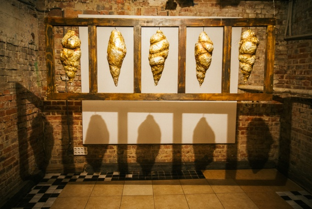

ЛАБОРАТОРИЯ НЕНАПРАВЛЕННЫХ ДЕЙСТВИЙ
Поддержать Проект
Так как большая часть нашей деятельности не оплачивается способом платных мероприятий, мы нуждаемся в вашей поддержке. Вы можете оказать ее здесь вашим благотворительным взносом.
Информация
Лаборатория Ненаправленных Действий – это уникальный проект, который существует в городе Харьков уже на протяжение более трех лет. Авторы этого проекту художники и перформеры, которых объединяет поиск новых форм искусства действий (или перформанса). Деятельность «Лаборатории» находится на поверхности ритуального действия и акций современного искусства. С начала существования проекту наши акции увидело больше несколько тысяч людей в Харькове, Киеве, Литвы и Польши. В своем арсенале мы имеем больше 10 робот, включая инсталляции, видео-арт и масштабные костюмированные перформансы.
«Лаборатория Ненаправленных Действий» не имеет политического подтекста, мы концентрируемся на поиске мистических источников энергии, которые заложены в искусстве на мифологическом уровне. Этот опыт дает нам возможность распространения нашей деятельности в новом качестве.
Константин Зоркин
Константин Зоркин – художник, культуролог, перформер, закончил Харьковскую Академию Культуры, участник многочисленных проектов в области современного искусства в Украине, Литве, Польше. Художник – постановщик ряда спектаклей. Основатель Лаборатории Ненаправленных Действий. Автор лекций об искусстве в различных образовательных проектах.
Перформансы Зоркина и его группы «Лаборатория Ненаправленных Действий» - это новая художественная форма которая еще не имеет названия. Его принцип – это конденсация энергии в визуальном и материальном образе, связь между которыми осуществляется в действие.
Сандро Гарибашвили
Сандро Гарибашвили, орфеист, режиссер, преподаватель. Окончил Лондонскую Школу Физического Театра 2005 по методу Жака Лекока. Основал Театр «Нога Слона» 2006, Чикаго, США. Участник многочисленных театральных проектов и фестивалей в США, Канаде, Чехии, Литве, Англии и Украины. Основатель «Харьковской комедийной Мастерской» 2015 Харьков Украина. Активный Участник Лаборатории Направленых Действия.
ЖИВЫЕ И МЁРТВЫЕ

Инсталляция. Материалы: дерево, металл, фольга.
Работа представляет собой имитацию популярного живого аттракциона, в котором зрители могут проследить жизненный цикл тропических бабочек. Посреди большого города, в огромном торговом центре, в маленьком душном помещении бабочки рождаются, живут и умирают под ногами у зрителей. На выходе из помещения посетители могут купить мёртвую бабочку в застеклённой коробке. Бабочки после смерти выглядят так же, как при жизни. У них нет выхода из этой ситуации, и нет сознания, чтобы понять это. Отличие от человеческой жизни здесь только в том, что мёртвое человеческое тело выглядит не так презентабельно. Наверное, из него уходит то, чего бабочки лишены.
Работа экспонировалась в двухкомнатном полутёмном пространстве и состояла из трёх частей: коконы, подвешенные к потолку колыбели-гробы с большими бабочками и две доски с коллекцией маленьких бабочек, прибитых гвоздями.
ФАНТОМНЫЙ КЛЕЩ

Инсталляция. Материалы: дерево, золотая краска.
Фантомный клещ – это симптом нервного напряжения в информационном обществе, при котором возникает зуд на поверхности кожи. Человеку, поражённому этим симптомом, кажется, что по его телу ползают насекомые, которых на самом деле нет. В итоге возникает неконтролируемое нервное почёсывание, усиливающееся и доводящее человека до причинения вреда своему телу. Таким образом, иллюзорный раздражитель приводит к вполне реальной угрозе для здоровья. Единственный эффективный способ борьбы с этим симптомом – это специальные чесалки – предметы, цель которых отбить желание чесаться, тем самым лишив Фантомного клеща возможности паразитировать на нашей психосоматической беззащитности.
DRESS-CONTROL
Инсталляция. Материалы: дерево, металл.
Работа на стыке Fashion и Art представляет собой иронию по поводу костюма, как символа защиты национальной идентичности. В основу инсталляции был положен принцип paper-dolls – бумажной игрушки из детских журналов в виде куклы и костюмов для неё. Бумажные загибы позволяют менять кукольные костюмы в зависимости от ситуации (спорт, бал, отдых, война). Среди элементов костюма располагается человеческая фигура с аналогичными загибами – костюм человека, как один из вариантов облачения.
Разоблачение – это процесс снятия защитных слоёв. Одежда-забор, сшитая железными скобами, снята с человека, который тоже был на что-то одет. Что остаётся, когда все ложные оболочки сняты? И можно ли увидеть основу, которая скрывалась внутри?
ENIGMA (ЗАГАДКА)


Интерактивная медиа-инсталляция. Сделана в соавторстве с Никола Лекка, Анаи Майер, Себастьяном Вехером в рамках украинско-австрийской резиденции (проект «Sex-Dialoges»)
Материалы: дерево, металл, скотч на алюминиевой основе, пенопласт, глина.
Работа структурно разделена на два мира: мужской и женский. Первый уровень восприятия – это пульт управления, где рычаги обозначены фаллическими символами разного размера. Пульт связан с дальним планом инсталляции – двумя симметричными экранами, на которых мы видим движение деревьев за окном поезда. При движении рычагов на экранах возникают различные ценности мужского мира (дорогие машины, дворцы, война), эти кадры наслаиваются на деревья и мешают их видеть. Пульт – это соревнование, принцип «у кого больше», иллюзия контроля и власти. Чтобы освободиться от навязчивых иллюзий, мы обходим пульт, садимся у ног Сфинкса и слушаем Загадку. Датчик присутствия реагирует на неподвижного человека, слушающего загадку, экраны за спиной Сфинкса медленно закрываются, в ушах звучит писк, забивающий остальные звуки. Когда экраны-глаза закрываются полностью, вспыхивает прожектор, и экраны открываются снова, но уже ослепительно белые. Это путешествие в хтонический мир Великой матери и одновременно сон в поезде.
АКТИВНАЯ ПРЕДМЕТНАЯ СРЕДА
Инсталляция, перформанс.
Материалы: дерево, металл, верёвка, мел, глина, бумага, тушь, вода, воск.
Активная предметная среда – это условное название проекта, который начался в 2014 и продолжает развиваться по сей день, обрастая новыми объектами и новыми действиями. Как инсталляция – это абсурдная мастерская, в которой инструменты из предметов превращаются в сакральные объекты, назначение которых раскрывается в действиях художника. Действия художника строятся как ритуал, структура которого зависит от ситуации, набора объектов, настроения художника и т.д.
Создание объектов – это попытка найти границу предметности, преодолеть её и трансформировать утилитарную фукцию объекта в магическую. Каждый показ перформанса – это борьба с вещью, осознание бессмысленности манипуляций с предметами. А главное – это погружение художника в среду, наполнение которой не подчиняется логике окружающей реальности.
ГЗА-УНДА-ДЗАЛА

Перформанс. Состав участников: Константин Зоркин, Сандро Гарибашвили, Юрий Штайда.
Это первая работа, сделанная коллективно «Лабораторией ненаправленных действий», группой художников-перформеров, работающих с объектами, звуком и телом. Название переводится с грузинского, как «Путь к силе», а действие строится на ощущении от древнего текста «Эпоса о Гильгамеше». В этом перформансе художники действуют как шаманы и как воины, идущие в путь за силой. После первого показа был сформулирован концепт «урбанистического шаманизма», состояния, в котором человек ищет маргинальные, дикие зоны в городской среде и использует их как разломы в ткани цивилизации, подпитываясь исходящей оттуда тектонической энергией древних миров. Перформанс имеет свою особую предметную среду, каждый элемент которой наполнен силой, необходимой воину в пути.
СУМЕРКИ

Перформанс. Материалы: Полиэтиленовые мешки для мусора, дерево, воздух.
Участники: Константин Зоркин, Юрий Штайда.
Работа принимала участие в акции Ночь музеев в Харькове в 2016г. Длительность перформанса была связана с временем суток. Художники в течение 40 минут ловили воздух мешками для мусора, собирая их в чёрную гору посреди открытой площадки. К этому моменту на улице стемнело, и возникло ощущение, что темнота сгустилась в центре созданной чёрной массы. Когда гора была построена, художники, одев специальные приспособления на руки и на ноги, разрушили получившуюся конструкцию. К.Зоркин прокалывал мешки, а Ю.Штайда давил их. В результате все обрывки черного полиэтилена были собраны в один мешок, и ситуация свернулась в исходную точку.
ПЕЙЗАЖ No 1

Лэнд-арт. Работа сделана в рамках проекта «ЕХ-пленэр» (арт-резиденция Барановка, Полтавская область). Материалы: дерево, трава, мох, гвозди.
Работы, созданные художником в Барановке, были нацелены на поиск альтернативных видов пленэра. Поэтому форма работы отсылает к этюду, стоящему на мольберте, но сама работа сделана из досок, найденных под ногами, в которых угадываются ритмы местного пейзажа. Пейзаж No 1 был выставлен так, чтобы через незаполненные фрагменты можно было видеть пейзаж-прототип и постоянно меняющееся небо.
ВОЗВРАЩЕНИЕ
Перформанс. Материалы: дерево, ветки, верёвка, трава, глина.
Эта работа – размышление на тему камуфляжа и способов маскировки. Желание слиться с природой может приобретать разные формы. Если подойти к этому вопросу со стороны fasion-идеологии, то слияние будет равносильно одеванию. Древние люди ели мир вокруг себя, перерабатывали его и одевались в него. Ткань, кожа, мех и шерсть были частью мира и становились частями одежды. В перформансе «Возвращение» была сделана попытка одеться в поле, лес и землю. Деревья и трава монтировались на специальные атрибуты, после чего художник проверил возможности своего камуфляжного костюма, перешёл в горизонтальное положение и ползком исчез в зарослях, на некоторое время став их частью.
GAME-VOMER


Участники: Константин Зоркин, Сандро Гарибашвили.
Материалы: металл, полиэтилен, дерево, керосин, водяной пистолет, пиво, сушёная рыба.
Эта работа была завершением акции Ночь перформанса в Харькове . Действие развивается на фонтане Каскад, многоступенчатой бетонной конструкции, которую художники использовали, как модель многоуровневой компьютерной игры (типа Super Mario), где положительный герой, вооружённый водяным пистолетом, на каждом уровне должен победить “злодея», который стреляет горящими деревянными рыбами-вомерами (fire-fish). Оба персонажа перебираются всё выше и выше по ступеням, пока не наступает кульминация: герой и злодей становятся друзьми и, прорвав экраны виртуальной реальности настоящими рыбами, начинаюткормить друг друга таранкой и поить пивом. Всё это происходит под электронные сэмплы детского синтезатора.
+38 097 521 6711
skype: sandro.garibashvili
undirectionalaction@gmail.com
Пушкинский Вьезд 6, Харьков, Украина, 61024